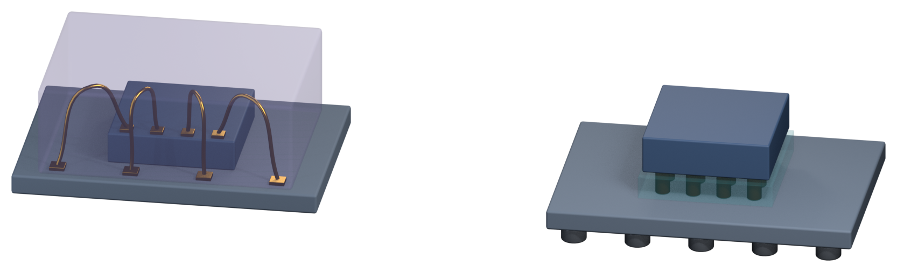

封装：替裸片盖一间房子
裸片又小又脆，焊盘小到没法直接焊到电路板上。封装要同时解决四件事：保护、连接、散热、支撑。而「怎么连出来」，决定了这个封装是打线还是覆晶。
01四个任务
保护
隔绝湿气、灰尘、外力。环氧树脂把裸片和导线包起来。
连接
把微米级焊盘，转成电路板能焊的引脚或锡球。
散热
芯片跑起来会发热，封装要把热带走，否则性能掉、寿命短。
支撑
提供机械强度，方便搬运、贴装到板子上。
02怎么连出来：打线还是覆晶
同是「把裸片接出来」，两种思路。切换看剖面差别。
用比头发还细的金线或铜线，把裸片边缘的焊盘连到基板。成本低、技术成熟，至今仍是数量最多的封装方式。
为什么打线还活着：便宜、成熟、设备遍地。大多数 MCU、电源管理芯片都用它。
03九步：从晶圆到一盘芯片
把晶圆磨薄，好放进轻薄封装。磨完像纸一样脆。
钻石刀或激光沿切割道切开；隐形切割靠内部改性层撑开。
照晶圆图只挑好的裸片，粘到框架或基板上。
打线或覆晶——这一章讲的分岔就在这里。
环氧树脂包住裸片与导线，隔绝湿气与外力。
激光印型号与批号，追溯用。
底部植锡球，或给引脚镀层，方便焊接。
把一整条基板切成一颗颗独立芯片。
外观、尺寸、电性，然后进最终测试（第 22 章）。
04常见形式与两个坑
| 形式 | 特色 | 常见用途 |
|---|---|---|
| 引线框架封装 | 成本低，引脚在四周或底部 | 微控制器、电源管理 |
| BGA 球栅阵列 | 底部整面锡球，连接点多 | 处理器、图形芯片 |
| 晶圆级封装 WLP | 直接在晶圆上封装，尺寸接近裸片 | 手机中的小型芯片 |
爆米花效应
封装材料吸水，回流焊时水分瞬间汽化膨胀，内部脱层甚至爆裂。所以要防潮袋 + 干燥剂，拆封超时先烘烤。
薄晶圆会碎
背面研磨后可能只剩一百微米，先贴保护膜或键合到载片再搬运，否则破片或留下看不见的微裂。
053D 剖面：金线弧 vs 凸块阵列
左边是打线：裸片正放，四根金线从焊盘打弧连到基板，外面罩着半透明的塑封料。右边是覆晶：裸片翻过来，凸块阵列直接压在基板上，缝隙填了底部填充。

3D 才看得出的差别：打线的连接点在四周、路径长；覆晶的连接点铺满底面、路径短。平面图上这两件事都只是一行字。
＋原文里的名词与现场经验
以下内容逐条取自原书，保留「定义 / 现场用法 / 常见混淆」与「情境 / 做法 / 为什么」的原始结构。
名词引线键合（Wire Bonding）
- 定义
- 用极细的金属线连接裸片焊盘与封装连接点的技术，是最传统、最普遍的封装连接方式。
- 现场用法
- 「这批引线键合的拉力测试没过。」
- 相关名词
- 焊盘、引线框架、倒装芯片
- 常见混淆
- 引线键合虽然是传统技术，但至今仍是数量最多的封装方式，因为成本低、技术成熟。
名词倒装芯片（Flip Chip）
- 定义
- 把裸片正面朝下，通过凸块直接与基板连接的封装方式。
- 现场用法
- 「这颗是倒装芯片封装，要确认底部填充有没有空洞。」
- 相关名词
- 凸块（Bump）、底部填充、基板、BGA
- 常见混淆
- 凸块和锡球不一样。凸块连接裸片和基板，锡球则在封装的底部，连接封装和电路板。
Know-how芯片也会「受潮」
- 情境
- 封装好的芯片放在一般环境中，封装材料会慢慢吸收空气中的水气。
- 做法
- 芯片依照对湿气的敏感程度分级，出货时用防潮袋加干燥剂真空包装。拆封后超过规定时间没用完，焊接前要先烘烤除湿。
- 为什么
- 焊接到电路板时温度会急速升高，封装内的水气瞬间汽化膨胀。
- 没做会怎样
- 封装内部脱层甚至爆裂，这种现象被形象地称为「爆米花效应」。
- 相关章节
- 第 22 章 最终测试与可靠性
Know-how磨薄的晶圆非常脆弱
- 情境
- 晶圆经过背面研磨后，可能只剩一百微米左右甚至更薄，像纸一样会弯曲。
- 做法
- 研磨前先在正面贴上保护胶膜或键合到承载晶圆上，之后的搬运也使用专用的机构支撑。
- 为什么
- 薄晶圆很容易破裂和翘曲，内部的应力也会让它弯曲变形。
- 没做会怎样
- 晶圆破片，或是产生肉眼看不见的微小裂痕，等到芯片使用一段时间后才失效。
- 相关章节
- 第 21 章 先进封装
＋常见异常
| 异常 | 可能原因 | 结果 |
|---|---|---|
| 崩边 | 切割刀磨损、切割参数不当 | 裸片边缘破损，可能延伸成裂痕 |
| 引线键合粘不上 | 焊盘污染、针痕过深 | 断路 |
| 冲线 | 塑封时的流动把细线推弯 | 相邻导线短路 |
| 脱层 | 材料之间附着不良、吸湿 | 可靠性问题 |
| 空洞 | 塑封或底部填充没有填满 | 散热变差、可靠性问题 |
＋延伸阅读
- Rao R. Tummala，《Fundamentals of Microsystems Packaging》
- Peter Van Zant，《Microchip Fabrication》，封装相关章节
本章重点
- 封装解决四件事：保护、连接、散热、支撑。
- 打线用细金属线连边缘焊盘，便宜成熟；覆晶用凸块正面朝下焊到基板。
- 覆晶路径更短、I/O 更密、散热更好，但需要底部填充。
- 流程九步：研磨、切割、固晶、互连、塑封、打标、植球、分离、检查。
- 封装怕潮（爆米花效应），也怕薄（破片）。